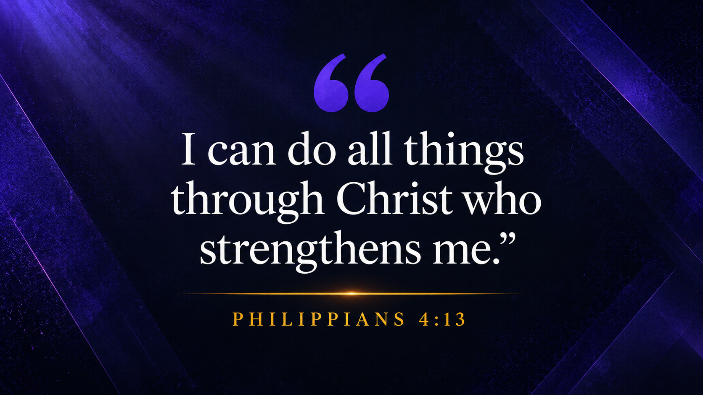
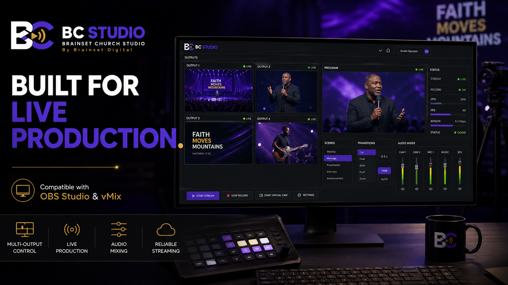
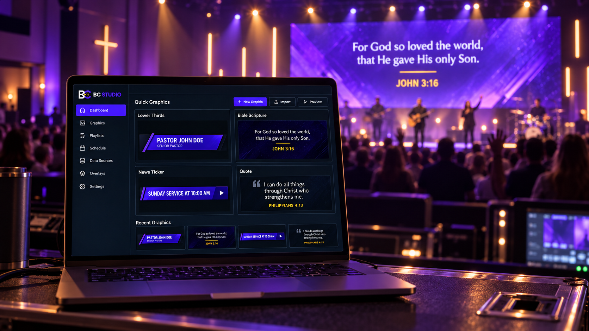
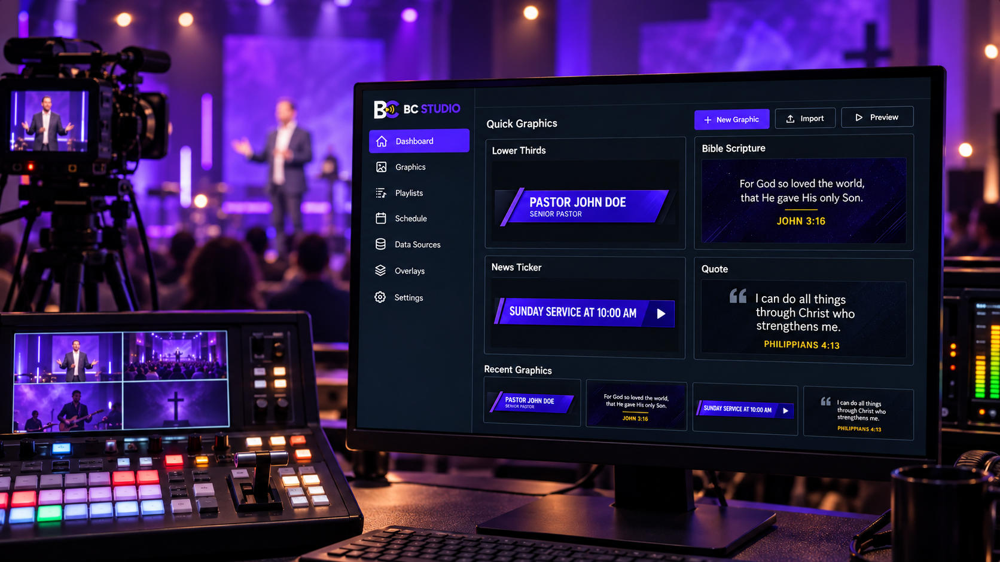

Introduce speakers with clean, modern lower thirds.
Run your
church graphics
like a pro.
Scriptures, lower thirds, tickers,
quotes and scenes—all live
from one studio.
▰ Local app▰ 1920 × 1080▥ OBS + vMix
CreatePresentBroadcast
Six tools. One workflow.
For God so loved the world,
that He gave His only Son.JOHN 3:16
that He gave His only Son.JOHN 3:16
Display passages beautifully with dynamic layouts.
SUNDAY SERVICE AT 10:00 AM ›
Scroll announcements and updates across the screen.

Create impactful quotes that inspire and engage.

Organize scenes and media for any moment.
WELCOMEWE'RE GLAD YOU'RE HERE
Design anything with full creative freedom.
StudioThe control
The control
room for
Sunday.
Build once. Send everywhere.
Stay in control.
Everything prepared
and on standby.
Send to outputs.
You’re on air.
Push to OBS Studio
or vMix instantly.
From idea to on air.
Pick a design
Choose from built-in graphics
or your own templates.
Make it yours
Edit text, colors, fonts
and branding in seconds.
Send it live
Push to OBS Studio or vMix.
Go live with confidence.
One desk → every screen

Look great on the big screen.
Every detail, every time.

Captivate your online audience
with clean, professional graphics.
Share powerful messages
across every platform.
Built for OBS Studio + vMix
Transparent browser-source outputs 1920 × 1080
Switch the look. Keep the flow.
Local-first
Runs on your Windows PC.
Your data stays local.
No subscription
One-time download.
No recurring fees.
Ready-to-use
Templates ready.
Use them right away.
Fully customizable
Make it yours.
Match your ministry.
Make Sunday look ready.
Download BC Studio for Windows and
take control of every graphic.